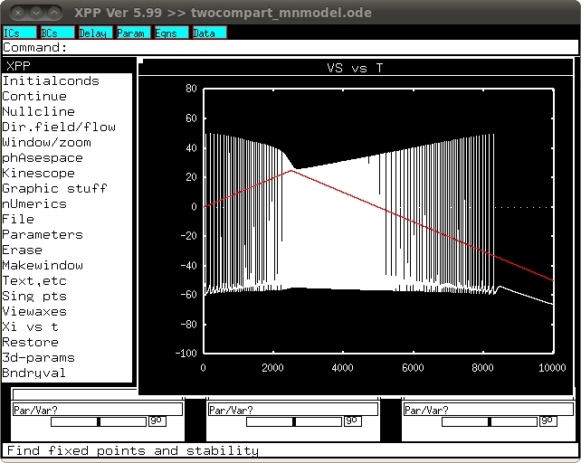

The XPP and MATLAB models are used in: Kurian M, Crook SM, Jung R (2011). Motoneuron model of self-sustained firing after spinal cord injury. J Comput Neurosci. 2011 Apr 28. [Epub ahead of print] PMID: 21526348 The two compartment motoneuron model can be run using either MATLAB or XPP. Two compartment motoneuron model (MATLAB) To run the model in MATLAB: Download and save run_twocomp.m and ramp.m files Run the run_twocomp file. It will generate a temp1.mat file which is where all the data values are saved. The ramp.m file which is used in the run_twocomp.m creates the figures in the format of Fig. 2 in the paper. The other figures in the paper can be reproduced by changing the parameter values and using the appropriate ramp or pulse currents and plotting windows. Two compartment motoneuron model (XPP) To run the model in XPP: Download and save the twocompart_mnmodel.ode file. In XPP window run using 'Initialconds' and 'Go'. This should generate a graph similar to figure 2e:  The data generated can be saved to a .dat file for example write the generated data as 'test.dat'. The MATLAB program ramp_xpp.m is used to generate figures in Fig.2 format of the paper using the 'test.dat' file.